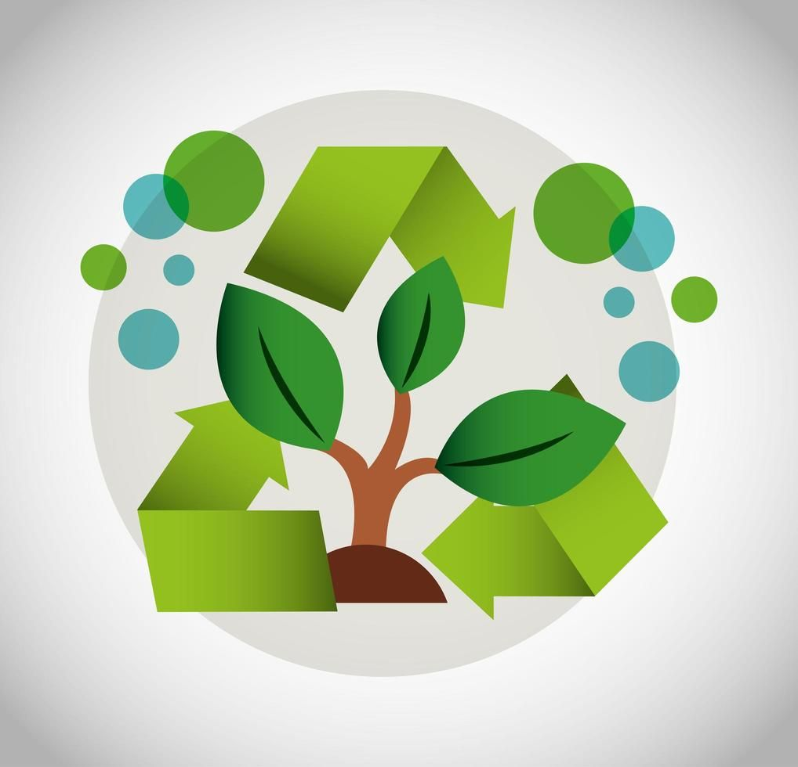
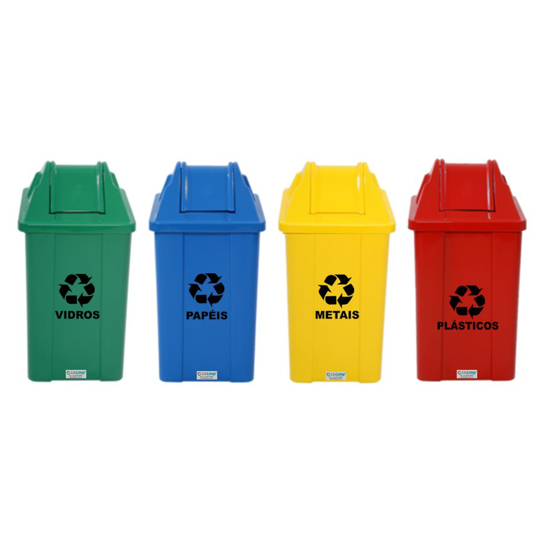
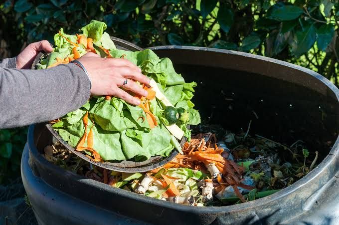
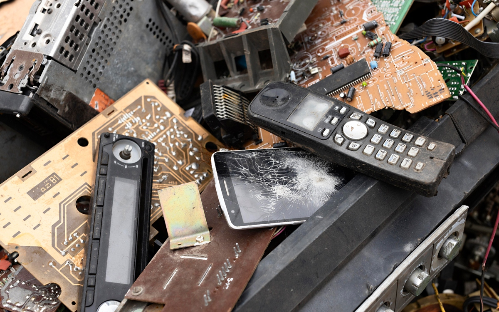

Transforme seu resíduo em impacto positivo
Aprenda a descartar corretamente materiais recicláveis, orgânicos e e-lixo. Encontre ecopontos na sua região e ajude a fortalecer a economia circular local.

O Compromisso com o ODS 12
O Objetivo de Desenvolvimento Sustentável 12 busca assegurar padrões de produção e de consumo sustentáveis.
Redução de Resíduos
Incentivo à diminuição da geração de lixo por meio da prevenção, reciclagem e reuso.
Educação e Consciência
Capacitação da comunidade para escolhas de consumo mais sustentáveis no dia a dia.
Economia Circular
Integração entre geradores de resíduos, cooperativas e indústrias de reciclagem.
Guia Rápido de Separação

Papel, Plástico e Metal
Lave os recipientes para retirar resíduos orgânicos antes de encaminhar à coleta.

Resíduos Orgânicos
Restos de alimentos podem ser transformados em adubo natural por meio da compostagem.

Lixo Eletrônico e Óleo
Pilhas, baterias e óleo de cozinha exigem pontos de entrega voluntária (PEV) específicos.
Encontre o Ecoponto mais próximo
Localize cooperativas parceiras, pontos de entrega de óleo e coletores de e-lixo na sua região.
Ecopontos Cadastrados
Cooperativa Recicla Cidade
0.8 kmRua das Flores, 123 - Centro
Seg a Sex: 08h às 17h • Aceita: Plástico, Papel, MetalPEV E-Lixo & Baterias
2.3 kmAv. Principal, 2050 - Bairro Universitário
Seg a Sáb: 09h às 19h • Aceita: Eletrônicos, PilhasCadastre seu Ponto ou Seja Voluntário
Quer mapear um novo ponto de coleta ou colaborar com projetos ambientais da sua comunidade?